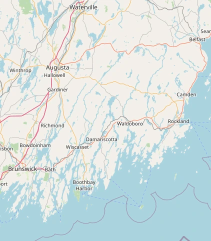
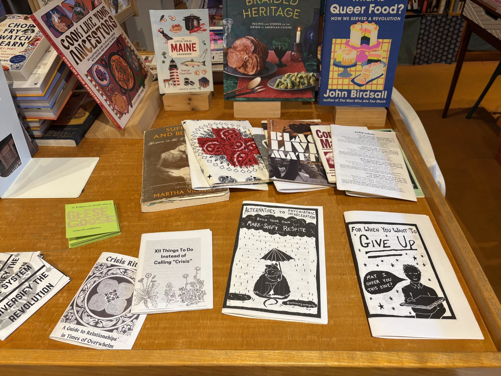
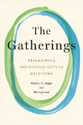
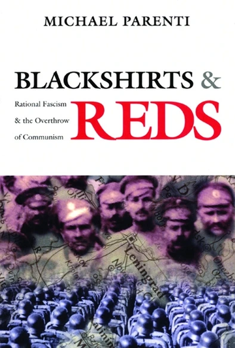
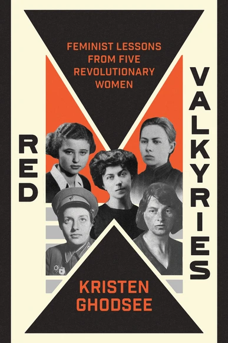
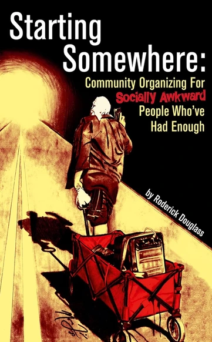
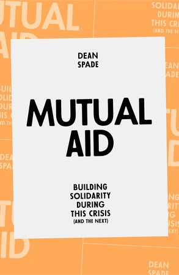
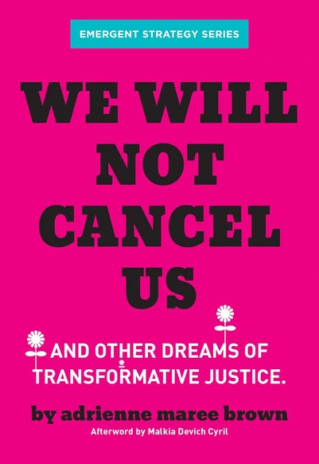
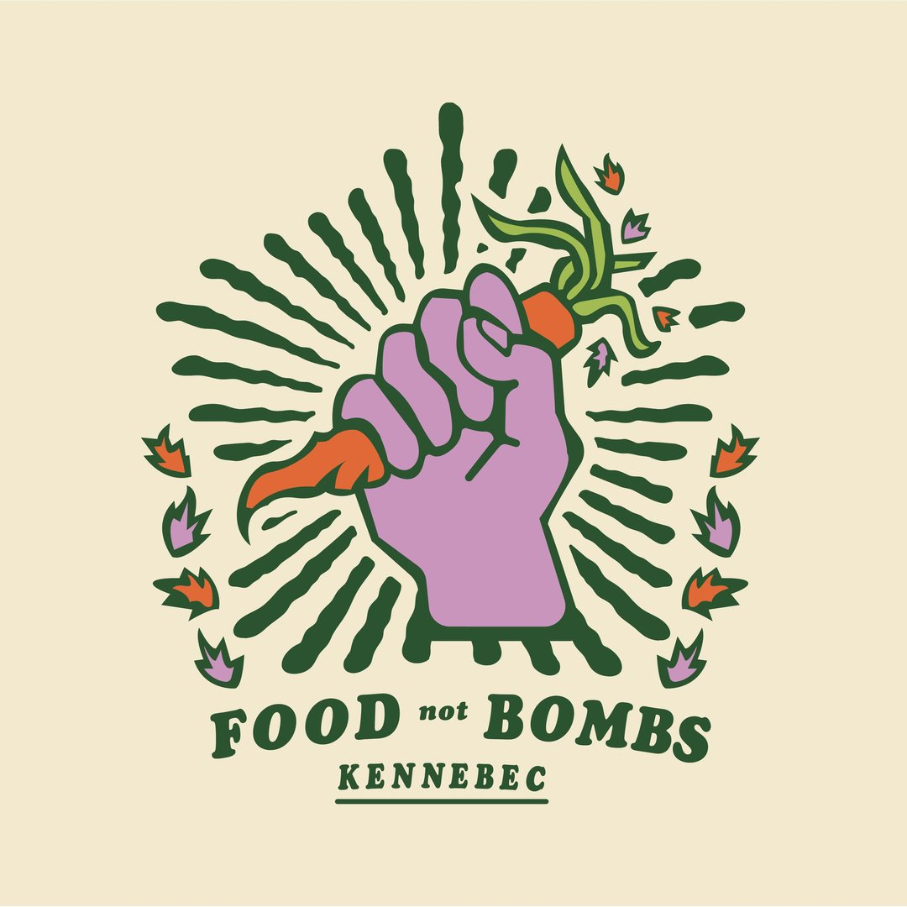

Our mission is to develop socialist parallel power & build solidarity in Wabanaki Territory/Midcoast Maine to replace capitalist systems through education, advocacy, and organization.
About
Midcoast Solidarity is a group of people striving to organize to build a socialist future within Midcoast Maine. We define that region as stretching along the coast of Penobscot Bay from the mouth of the Passagassawakeag river, south to the Androscoggin river (enveloped by the settlements known as Belfast and Brunswick), and inland to I95.

Our Mission
Our mission is to develop socialist parallel power in Midcoast Maine/Wabanaki Territory communities to replace capitalist systems through education, advocacy, and organization.
Our Values
We value life over profit. The practices and ideologies of capitalism, coloniality, racism, and bigotry infringe upon the agency of individuals, groups, and marginalized identities. Midcoast Solidarity strives to separate our survival needs from these oppressive systems.
Solidarity
As a core principle, we agree to build solidarity with our fellow Midcoast Solidarity members, local community, and other organizations in our geographical area working towards liberation, because none of us are free until all of us are free.
Organization
Our organization makes decisions using consent-based processes and is divided into smaller groups called circles that take on specific tasks.
Check out our Handbook!
Contact
Connect on Social Media

PS: Our GitHub is also where the source code for this website lives (and is even hosted for free via GitHub Pages)!
Join our Email List or Get Involved
Activities
Zine Night

The Midcoast Solidarity Bookclub hosts a monthly zine workshop in Rockland, Maine every 2nd Tuesday. Materials will be provided (paper, writing utensils, collage materials, and creativity)! Feel free to bring any additional items to use or share. Get in touch if you'd like to be added to the group and/or find out the location.
Bookclub
Bookclub meets every week, alternately in person in Rockland, Maine, or virtually via our Signal group, from 6:30pm to 8:00pm. Get in touch if you'd like to be added to the group and/or find out the location.
Currently Reading
Technofeudalism: What Killed Capitalism
Schedule
Jul 8: Canceled
Jul 15: Rockland
Jul
22: Virtual
Jul 29: Rockland
Aug 5: Virtual
Aug 12:
Rockland
Previous Reads
State and Revolution
Pedagogy of the Oppressed
The Gatherings: Reimagining Indigenous-Settler Relations

Blackshirts and Reds: Rational Fascism and the Overthrow of Communism

The Dispossessed An Ambiguous Utopia
Red Valkyries: Feminist Lessons from Five Revolutionary Women

Starting Somewhere: Community Organizing for Socially Awkward People Who've Had Enough

Mutual Aid: Building Solidarity During this Crisis (and the Next)

We Will Not Cancel Us: And Other Dreams of Transformative Justice

Resources
Miles Delivers Action Coalition (MDAC)
MDAC is a group organizing to precent the closure of another rural
labor & delivery unit in Maine. They are currently organizing to keep
the Miles Labor & Delivery unit at MaineHealth's Lincoln Hospital in
Damariscotta, Maine open. They also have a wide variety of volunteer
opportunities. Check out their website at
milesdelivers.org.
Maine Breathes Easy (MEBE)
MEBE is a diverse and unranked group of community members that
practice precautions against the dangerous impacts of COVID and other
serious illnesses. They offer free support, connection, information,
testing, personal protective equipment, and more through
consensus-driven activities. Visit their website to learn more or to
request free masks at
mainebreatheseasy.org.
ICE Response
Food

-
Midcoast Solidarity has launched MidcoastFood.me, a new resource intended to connect neighbors with free and local food resources across Maine. Use the interactive map to find food pantries, community fridges, and meal programs near you.

-
There is now a capital area branch of Food Not Bombs that serves Gardiner, Hallowell, Augusta, Waterville, and everywhere in-between! Check them out on Instagram @foodnotbombskennebec.